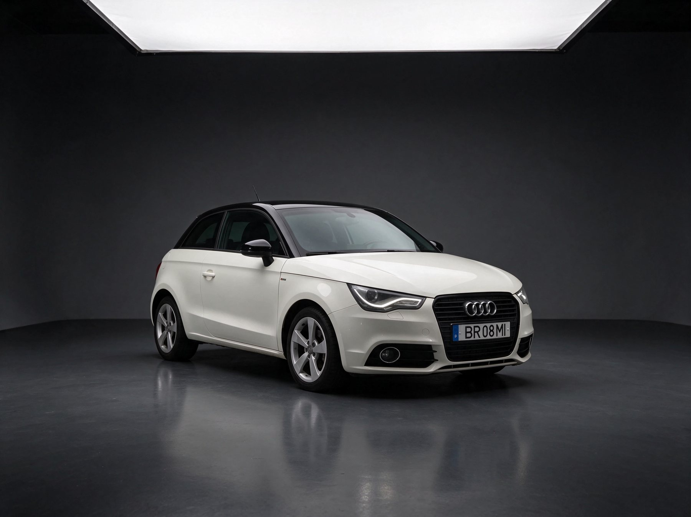

Aspeto para stands automóveis
Pegamos nas fotografias que já tiram no parque e transformamo-las em fotos de estúdio e vídeos cinematográficos, prontos para o Standvirtual, OLX, Instagram e o vosso site. Sem estúdio, sem fotógrafo, sem tirar o carro do stand.
O problema
Num portal com centenas de anúncios iguais, a primeira fotografia é o que decide se alguém clica no vosso carro ou passa à frente.
01
Reflexos, sombras, outros carros e o céu de fundo. O carro pode estar impecável, mas a foto não o mostra.
02
Nos portais, quem não se distingue compete só pelo preço. E baixar o preço é a forma mais cara de vender.
03
Instagram, TikTok e Facebook mostram vídeo primeiro. Uma galeria de fotos de parque passa despercebida.
Antes e depois
À esquerda, a foto que está hoje no vosso anúncio. À direita, a mesma viatura depois do tratamento Aspeto.


O que fazemos
As vossas fotos do parque passam a fotos de estúdio: fundo limpo, luz profissional, reflexos controlados. O carro continua exatamente igual, com as mesmas jantes, a mesma matrícula e o mesmo estado.
Um vídeo vertical por viatura, pronto para Reels, TikTok, Stories e anúncios pagos. O formato que as redes mais mostram.
Uma página por carro, com galeria, ficha técnica, equipamento e WhatsApp a um toque. Ideal para partilhar com quem pergunta pelo carro.
O mesmo estilo em todos os carros, com o vosso logótipo. Quem vê um anúncio vosso reconhece o stand no seguinte.
Porque os stands vendem mais connosco

“Um carro bem apresentado parece um carro bem cuidado.”E um carro bem cuidado é o que o comprador procura.
Uma primeira foto de estúdio destaca-se no meio de uma lista de fotos de parque. Mais pessoas abrem o vosso anúncio em vez do da concorrência.
Fotos cuidadas passam a ideia de um stand profissional e de carros bem tratados. O cliente chega ao stand já convencido do carro.
Com o vídeo nas redes e a página com WhatsApp a um toque, o cliente fala convosco em segundos, sem formulários.
Um carro que parece premium defende melhor o seu preço. Competem pela apresentação, não só pelo valor.
Continuam a tirar as fotos como sempre e enviam-nas por WhatsApp. Nós tratamos do resto e devolvemos tudo pronto a publicar.
Exemplo real
Fizemos este exemplo com as fotografias do vosso anúncio. Oito fotos de estúdio e um vídeo, a partir das fotos que já tinham.
Como funciona
1
Com o telemóvel, no parque. Frente, lados, traseira, jantes e interior.
2
Sem plataformas novas nem contas para criar. Só uma conversa.
3
Fotos de estúdio, vídeo e página do carro, prontos para os portais e as redes.
Honestidade em primeiro lugar. As imagens de estúdio são criadas a partir das fotografias reais de cada viatura. Mudamos o fundo e a luz, nunca o carro: riscos, quilómetros e estado ficam como estão. Cada anúncio pode indicar isso, para o cliente saber sempre o que vai encontrar no stand.
Escolham uma ou duas viaturas e fazemos o primeiro tratamento convosco, para verem o resultado nos vossos anúncios.